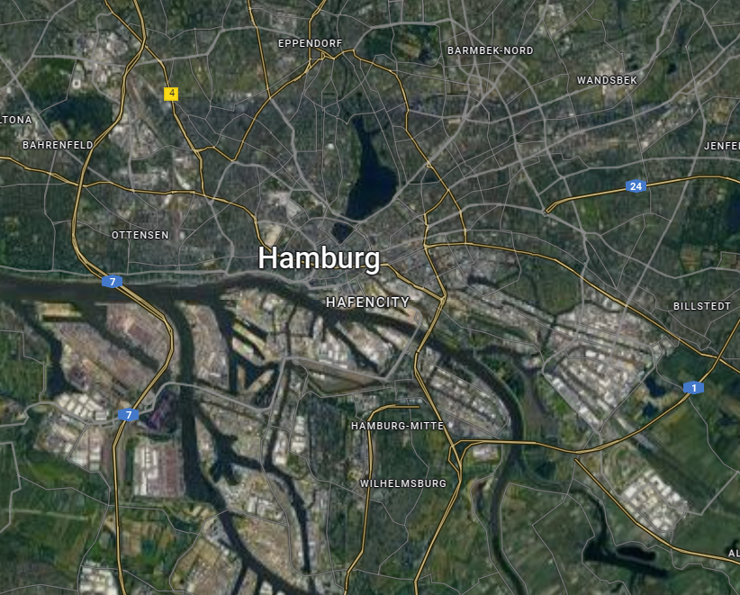
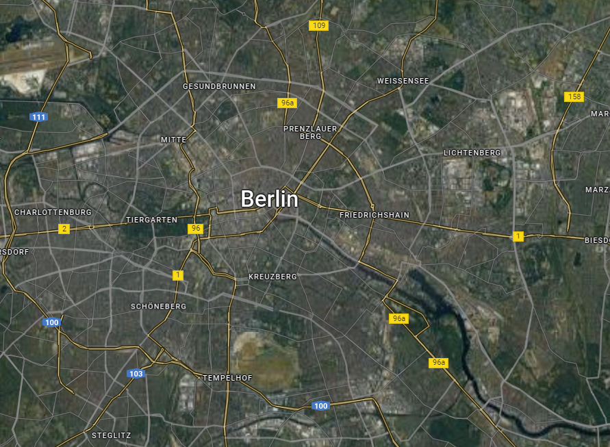
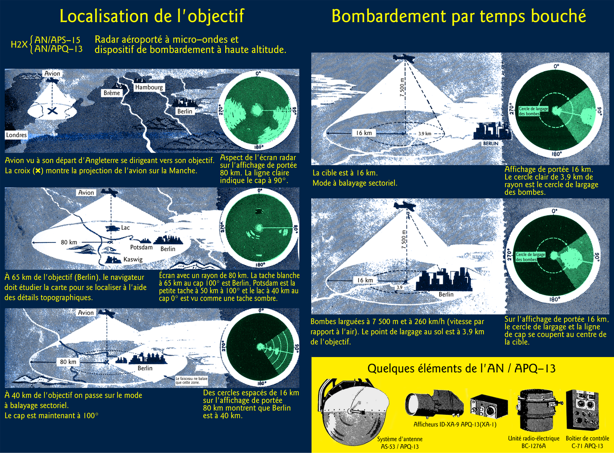
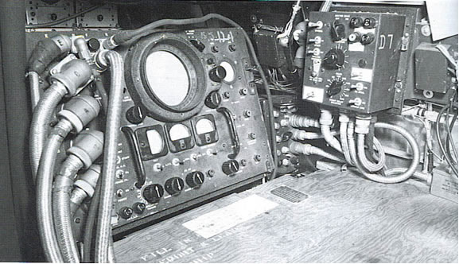
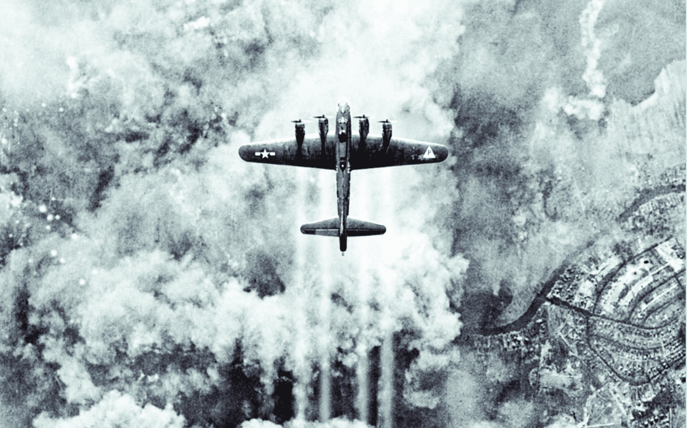
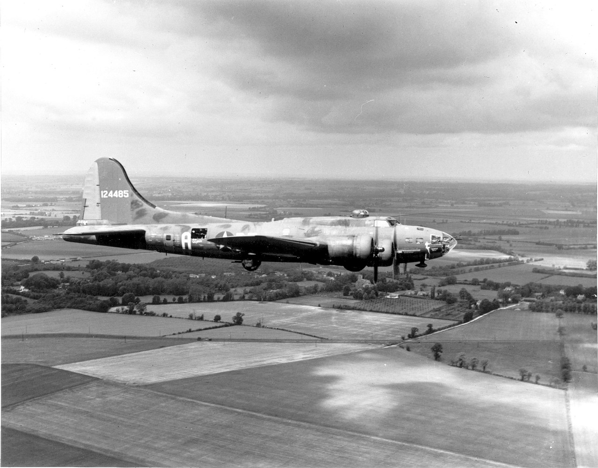
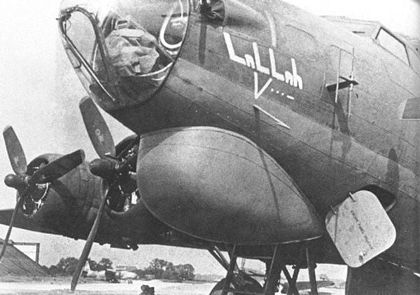
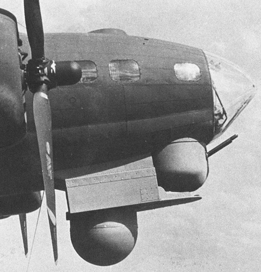
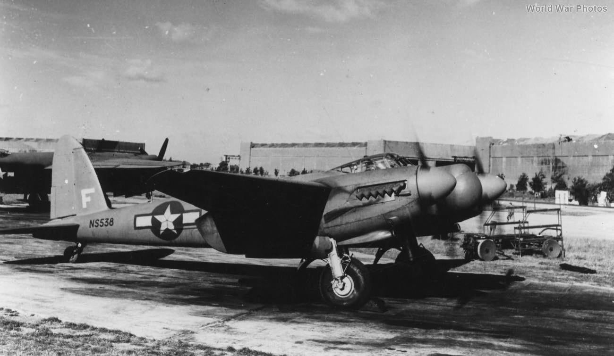

레이더 개발 이야기 (47) - 멤피스 벨과 H2X
게시: 2023-09-14T06:30:24+09:00
<X-band 시대의 개막> H2S는 밤눈이 어두운 로열 에어포스 항법사들에게 성공적으로 독일로 가는 밤길을 안내하는 도구가 되었으나, 쾰른이나 함부르크를 폭격할 때는 나오지 않던 불평이 베를린 폭격에서는 쏟아져 나옴. 1943년 8월 말과 9월 초, 3번에 걸친 베를린 폭격 작전후, 폭격기 사령부와 레이더 개발팀 사이의 연락 장교 역할을 하던 새워드(Saward) 중령이 베를린 상공에서 찍은 H2S 레이더 스코프의 사진을 레이더 개발팀애게 전달. 개발팀이 보니 그냥 무의미한 허연 점들과 패턴들이 화면을 채우고 있을 뿐, 뭔가 눈에 띄는 랜드마크 지형물을 구별할 수가 없었음. 다른 도시에서는 잘 통하던 H2S가 왜 유독 베를린에서는 맥을 추지 못했을까? 이유는 도시의 규모. 독일은 영국이나 프랑스와는 달리 여러 소왕국들이 분립하여 제각각 발전해오다 19세기 말에나 통일 독일 왕국이 된 나라다보니 도시들이 지방에 많이 분산되어 있었고 도시 규모도 비교적 작은 편. 그래서 어지간한 도시들은 H2S를 16km 전방까지 스캐닝해주는 폭격 모드로 놓고 보면 큰 빌딩이나 강 같은 눈에 띄는 것을 쉽게 찾을 수 있었음. 그러나 베를린은 수도답게 독일 최대의 도시로서 큰 건물이 잔뜩 밀집해 있어서 구분하기가 어려웠음. 게다가 베를린에는 함부르크를 관통하는 엘베 강이나 쾰른이 접해 있는 라인 강처럼 큰 강이 없음. 강이 베를린 한복판을 지나기는 하는데 듣보잡 작은 강인 슈프레(Spree) 강. 그러다보니 정확하게 폭탄을 투하해야 할 번지수를 찾는 것이 어려웠던 것.
 
(위가 함부르크, 아래가 베를린의 항공 사진. 둘 다 같은 척도로 찍은 것이고 지도에 보이는 함부르크/베를린의 이름 크기가 대략 2km 정도. 확실히 강도 작고 건물도 뺵뺵히 들어선 베를린에서는 길 찾기가 어려울 듯.) 3GHz의 고주파수로도 안된다면 어떻게? 더 높은 주파수인 X-밴드를 이용하면 됨. 이때부터는 미국 MIT의 전파 연구팀이 영국팀과 협동으로 개발에 합류. 결국 이들의 도움으로 신속하게 10GHz의 X-밴드 전파를 이용한 공대지 레이더를 개발. 1943년 10월에 이미 실전에 투입됨. 영국은 이 X-밴드 버전의 H2S를 H2S Mk. III라고 불렀고, 미국팀은 AN/APS-15 레이더라고 불렀지만, 실제로는 대부분 그냥 H2X라고 불렀음. 11월에 베를린 폭격에 사용된 H2S Mk. III는 기대에 어긋나지 않은 훌륭한 해상도를 보여주어 항법사들을 만족시켰음.

(전에 올렸던 사진이지만, 10GHz의 H2X는 이렇게 같은 편대 내의 B-17의 모습이 그대로 드러날 정도의 해상도를 선물)

(H2X의 원리와 사용법을 보여주는 프랑스어로 된 그림)

(H2X의 레이더 스코프 장치) <그런데 미군 항공대는 왜...?> 위에서 미군은 10GHz를 사용하는 H2S Mk. III에 AN/APS-15라는 제식명을 붙였다고 했는데, 뜻하는 바는 미군 폭격기들도 공대지 스캐닝 레이더를 사용했다는 것임. 미육군 항공대 폭격기들은 정밀 폭격을 위해 주간 폭격만 한다고 하지 않았던가? 대낮이라서 훤히 다 내려다보이는데 왜 레이더가 필요했을까? 간단. 목표물 상공에 구름이 끼는 경우도 많았기 때문. 또한 독일군도 폭격기들의 정확한 폭격을 방해하기 위해 목표물 상공에 연막을 치는 경우가 꽤 많았음. 유명한 WW2 폭격기 영화인 'The Memphis Belle'을 보면, 25번쨰인 마지막 임무를 나선 멤피스 벨은 처음 목표물 상공에 도달했을 때 독일군의 연막 때문에 목표물을 확인하지 못해 일단 폭탄을 투하하지 못하고 한바퀴 돈 뒤 다시 돌아와 연막 사이로 보이는 목표물에 폭탄을 투하하는 장면이 나옴. 그런 상황에서 H2S는 큰 도움이 됨.

(목표물 상공에는 구름이 끼기도 하고 독일군이 일부러 피운 연막에 앞선 폭격에 의한 화재의 연기 등으로 시야가 엉망진창인 경우가 많았다고) 그런데 B-17에도 H2S를 달았다면서 왜 멤피스벨은 그 레이더를 쓰지 않고 일단 목표물 상공을 지나간 뒤 맹렬한 고사포를 무릅쓰고 선회하여 되돌아왔을까? 멤피스벨의 마지막 임무는 1943년 5월 19일 킬(Kiel) 군항이었고, 그때는 아직 B-17 대부분에 레이더가 달려있지 않았기 때문. 미육군 항공대가 실전에서 H2X를 사용하기 시작한 것은 1944년 4월부터.

(실제 'The Memphis Belle'의 사진. 당시 주간 폭격을 고집하던 미육군 항공대의 B-17들은 손실률이 너무 막대하여 승무원들의 사기가 엉망이었으므로, 25번의 임무를 완수하면 집에 보내준다는 당근책을 제시했고, 이 멤피스 벨이 그 25번의 임무를 성공적으로 해낸 폭격기 중의 하나였음. 이 사진은 임무 완수 후 약속대로 미국으로 돌아가는 1943년 6월 9일의 모습.)

(흔한 모습은 아니지만 1943년 초반에도 B-17 일부는 영국제 H2S radar를 달고 있었음. 대신 그걸 달면 턱 부분의 기총좌를 떼어내고 거기에 대신 H2S를 위한 radome을 달아야 했는데, 미군은 이걸 보통 Stinky set이라고 불렀다고.)

(이건 Mickey set이라고 불리던 H2X를 장착한 B-17. 초기형의 모습이라 레이돔을 붙인 모양새가 매우 이상함.) <레이더 지도가 필요해> 그런데 이젠 꽤 오랫동안 H2S를 사용하여 익숙해진 로열 에어포스 항법사들과는 달리, 공대지 스캐닝 레이더를 보는 방법에 서투른 미군 항공대 항법사들에게는 레이더 화면에 보이는 지형과 구름 아래에 있을 지형을 일치시키는 것이 쉽지 않았음. 보다 못한 미군 항공대 사령부에서는 독일 내 주요 목표물 지점 인근에서의 레이더 지도 작성을 하기로 함. 아예 레이더 지도 작성의 임무만 띤 de Havilland Mosquito 경폭격기들에게 H2X를 장착하고는 독일 내 주요 목표물 인근에서 레이더 스코프의 화면을 연속 촬영하게 한 것. 대신 주간에는 위험하니 이 임무는 밤에만 출격시켰음. 아이디어는 좋았으나, 몇 번 해보니 문제가 많았음. 일단 미군 조종사들은 야간 비행에 익숙하지 않아 훈련 과정 중에서만도 3대를 손실했고, 경폭격기인 모스키토의 발전기에게는 많은 전력을 사용하는 H2X가 무리였는지 가끔 폭발이 일어나기도 했음. 결과적으로 제대로 된 레이더 지도를 만들지는 못하고 프로그램 종료.

(Nose cone 속에 H2X 레이더를 장착한 미육군 항공대 소속의 Mosquito 경폭격기)